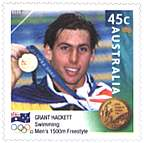
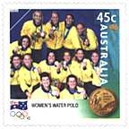
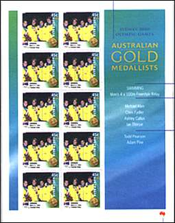
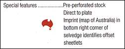
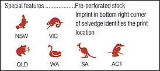
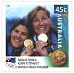
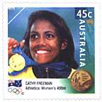

 |
A Modern Philatelic Story |
by Victor Manta

My young son
is sitting at his computer and is chatting with somebody on the Internet. He
does this for already four hours, a time during which my wife came already 3
times and asked me to propose his something different. OK, I'll try to do my
best. The first rule, don't forget to smile:
Hello, son, would you like to make
something different? It's not good for your eyes, you know, and you mother
is upset too … But, daddy, it's so interesting. Let's
say another 10 minutes, then we can play together. Is this OK? It's OK, I'm waiting for you in the
dinning room. Half an hour later we are sitting on the
sofa and we are chatting friendly. F. Would you maybe like to collect
some stamps? You have seen what a nice collection of paintings on stamps I
have (said with a proud voice) S. Yes, daddy, but I don't especially
like your paintings, sorry for that. I would rather collect some sport
stamps, if you have nothing against them F. Of course I haven't, they are also
nice. Could you tell me exactly what would you like to collect? You know,
you cannot collect all of them, there are too many sportive disciplines and
therefore too many stamps. S. OK, I understand, I should limit
myself a bit. What about Olympiads on stamps? I watched recently the
Australian Olympiad and I liked it so much! F. Of course, it's very interesting.
And where would you like to start? S. Let's say… at the very beginning.
When were issued the first Olympic stamps? F. It was a long time ago, in 1896, in
Athens, you know, the capital of Greece. There were at that time fewer stamp
collectors and for this reasons not many stamps were issued. This is the
reason why there are quite few stamps left for us. Unfortunately they are
too expensive for a beginner, but maybe you will buy them later, if you will
be still interested. Do you have another idea? S. Then why not to start with the last
Olympics issues, those from Australia. Because they were issued recently,
they should cost much less. What do you think, do you agree? F. Of course I do. Just a tip: buy
everything that was issued, in order to have the things complete. You know,
later it will be more difficult to find all of them. Take one set and one
sheet of every issue. And because you are such an Internet expert, order
them directly on the Net at the Australian Post. Here is the number of my
credit card. Is this OK? Of course, thanks a lot daddy? (a
kiss)  An offset
sheetlet (one from 16)  Offset sheetlets  Digital sheetlets An hour later, on the same sofa. F. OK, son, could you order your
stamps? S. (proud) Of course I could. I have
ordered everything I could find on the site, every issue that is related to
the Olympic issues. I'm sure that I have forget nothing. F. (smiling) Congratulations! I have a
really smart kid. Just a last thing, please. Could you tell me how much have
you spent? S. Just a moment, I need some time to
remember everything. Yes I know, a have spent 550 Australian Dollars. It
represents about 500 of our Swiss Francs, or about 190 USD. F. (a long pause, breathing deeply)
But I have told you to buy just one stamp of each, not several, haven't I? S. (scared) But father, I swear that I
haven't bought more than one. Just consider that only the Digital Set of
State Sets, containing 96 different sheetlets, cost A$432! (Looking at the
livid face of his father, crying) I don't need your damned philately
anymore, my Internet is much more interesting and I can have it for free! At this very moment I woke up, sweated,
looked around me and started to think feverishly. Come on, but I have no son, I
have a grown-up daughter, and she is not here, but abroad. What a nightmare!
Anyway, the kid of my dreams is probably right, I should rather see what's new
on the Web. Click!
 |
Do you like this article? Or, on the contrary, you have serious objections. Make use of PASIC Forum to express your opinion or send an e-mail to its author.

Notice: The
kid is perfectly correct. The Australian Post has issued an Offset Set of 16
sheetlets (printed ones), priced A$ 72.00
and a Digital Set of State Sets (printed on a FujiXEROX printer, in NSW, VIC,
QLD, WA, SA and ACT), 96 sheetlets in total, priced A$432.00,
+ several other sheets.
Please point to the stamps with the mouse for more information.
Link: Impersonal Stamps
| First
version: 8/27/00. Revised:
11/27/05. Copyright © 2000 by Victor Manta, Switzerland. All rights reserved in all countries. |
|
||